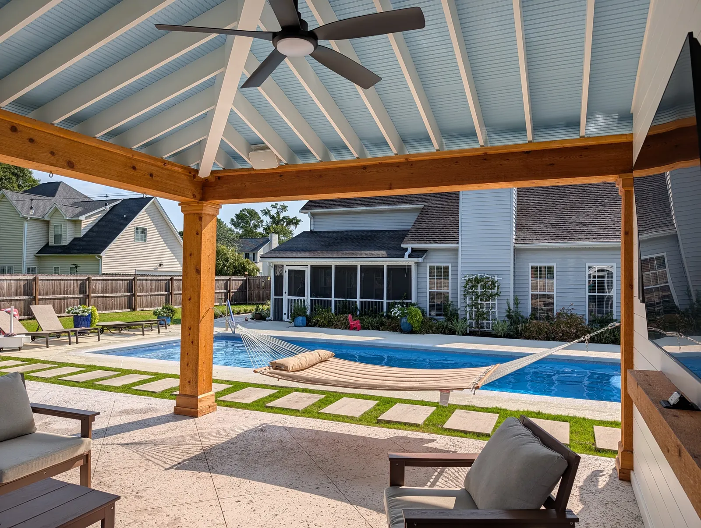

Pool Deck Resurfacing & Installation in Charleston, SC

Built and Resurfaced In-House Pool Decks That Don’t Sink or Crack
Almost every failed pool deck we’re called out to failed for the same reason, and it isn’t the surface. It’s the base underneath.
We build new decks and resurface existing ones across Charleston, Mount Pleasant and Summerville. Doug and Zach Cramer do the site visits and the design themselves, and one of them is on the job every day until it’s finished.
Resurface, or Tear Out and Replace?
This is the first thing we work out, and the answer is structural rather than cosmetic.
Resurfacing works if the deck is structurally sound. A tired, stained or dated surface over a solid slab is a good candidate for a coating.
If there’s cracking or settling, it has to be replaced. A coating over a deck that’s still moving will fail, because the problem is underneath it.
| New concrete pool deck | around $12/sq ft installed |
|---|---|
| Pavers, porcelain, travertine and natural stone | from about $18/sq ft |
| Resurfacing an existing deck | quoted on condition and coating |
| Removing the old deck | additional |
Concrete install runs about $12 a square foot depending on the job, and taking out the old deck is a cost on top of that. Resurfacing is quoted on the condition of the existing deck and which coating you want, so it’s priced after we’ve seen it.

Why Pool Decks Sink and Crack
Poor base prep, almost every time. When a pool is dug, the spoil gets backfilled around it — and that backfill is usually poor dirt that never got compacted properly. The deck goes on top, the fill keeps settling, and the slab follows it down and cracks.
The other two failures we see are settling and tree roots. Both are avoidable, and the fix for both is doing it right the first time: proper compaction, and a root barrier where roots are a risk.
Resurfacing fails for a different reason: poor prep before the coating goes on. The deck has to be cleaned properly, and any old coating that’s failing has to be stripped and removed first. Coating over a bad surface just buys you a year.
How We Build the Base
There’s no single right system — different builds suit different sites. These are the ones we use:
- Mortar-set on a solid concrete base. The best way to set a patio or pool deck, and what we’d recommend where the budget allows. It lets a square-edged stone sit dead flat, every piece level with the next — which is what you want underfoot around a pool.
- Compacted ROC base, with the pavers mortar-set on top, or set on sand or granite fines.
- #57 stone in place of ROC. It leaves air gaps, which helps stop tree roots growing up into the patio.
- Geotextile fabric underneath, where the site calls for it.
Which one we use comes down to the site, the material going on top, and what you’re spending. We’ll tell you which we’d pick and why.
Travertine, Porcelain, Concrete or Pavers
They all work around a pool. They differ on cost, heat, maintenance and how easily they can be repaired.
| Travertine | most expensive, most elegant, stays fairly cool, higher maintenance |
|---|---|
| Salt-void concrete | the cheapest option, low maintenance |
| Porcelain pavers | cheaper than stone, strong, heat resistant, low maintenance |
| Pavers | varies by product, low maintenance |
On heat: travertine stays cooler than the alternatives, and porcelain is heat resistant too, which is the main reason it is worth considering around a pool where people are barefoot. Be realistic though — in our heat, everything gets hot in direct sun. Salt-void and concrete pavers both warm up, but neither asks much of you afterwards.
On porcelain: it is generally cheaper than natural stone, it is strong, and it comes in a wide variety of looks. If you want the look of stone around the pool without the stone budget, this is the one to ask about.
On slip: nothing we install around a pool is slippery.
On repairs: this is the one people don’t think about. Pavers and travertine can be lifted and replaced piece by piece. A poured concrete deck that has started to crack can’t be repaired that way.

Mount Pleasant A Travertine Deck Around a Pool Pavilion
Travertine was the most expensive option on the table for this one, and the owners went for it anyway. It gave them the best looks, the best heat resistance and the luxury feel they were after.
It sits under and around the pool pavilion we built on the same project — the one with the grand beams.
By contrast, the West Ashley cabana sits on salt-void concrete, which was the cheaper choice there and still looks excellent. Both are the right answer for their project.
Coping, Drainage and Permeable Surfaces
Coping: we recommend at least 1.5 inch thick coping around the pool edge, and 2 inch is better.
Drainage is handled with proper grading, and where that isn’t enough, drain basins and piping to carry the water away.
Worth knowing before you plan: Lowcountry towns are getting stricter about how much impermeable surface a property can have. Permeable pavers are becoming a necessity rather than an upgrade, and it’s better to know that at the design stage than after a plan gets knocked back.
On sealing: travertine is porous and hard to keep clean without a sealer. For pavers we follow the manufacturer’s specification for the product, since the process and the maintenance interval differ between them.
How We Build Yours
- Free consultation at your home. We look at the existing deck, work out whether it can be resurfaced or needs replacing, and talk about what budget you’re comfortable with. Free anywhere around Charleston, Mount Pleasant and Summerville; farther out, like Bluffton or Kiawah Island, there’s a trip charge.
- Budget and design. Drawings, with optional 3D renderings at an additional cost.
- Base and drainage. Grading, the base system for your site, and drainage worked out before anything is laid.
- Install. Gas, electrical and plumbing, if the project needs them, are all done by our own team.
Pool decks pair naturally with pool pavilions, paver patios, fire pits and landscape lighting.
Frequently Asked Questions
Can my pool deck be resurfaced, or does it need replacing?
It depends on whether the deck is structurally sound. A tired or dated surface over a solid slab can be resurfaced. If there is cracking or settling, it needs to be replaced, because a coating over a deck that is still moving will fail.
How much does a concrete pool deck cost?
Concrete install runs around $12 a square foot depending on the job, and removing the old deck is an additional cost. Pavers, travertine and natural stone start from about $18 a square foot. Resurfacing is quoted on the condition of the existing deck and the coating you choose.
Why do pool decks crack and sink?
Poor base prep, almost every time. When the pool is dug the spoil gets backfilled around it, and that backfill is usually poor dirt that was never compacted properly. The deck settles with it and cracks. Settling and tree roots are the other common failures, and both are avoided with proper compaction and a root barrier.
Is travertine or concrete better around a pool?
Both work. Travertine is the most expensive and the most elegant, it stays fairly cool underfoot, and it asks more of you in maintenance. Salt-void concrete is the cheapest and the lowest maintenance. Porcelain pavers sit in between: cheaper than natural stone, strong, heat resistant and available in a wide range of looks. In our heat everything gets hot in direct sun, so the honest comparison is cost, maintenance and whether the deck can be repaired piece by piece later.
What is the coolest pool deck material underfoot?
Travertine stays cooler than the alternatives, and porcelain is heat resistant too, which is why both come up for decks where people are barefoot all summer. Be realistic though: in Charleston heat, every hard surface gets hot in direct sun. Shade over the deck does more for that than the material does.
Do pool decks get slippery?
Nothing we install around a pool is slippery.
Can a cracked pool deck be repaired?
Pavers and travertine can be lifted and replaced piece by piece, so a damaged area can be fixed without touching the rest. A poured concrete deck that has started to crack cannot be repaired that way, which is worth weighing up before you choose a material.
How thick should pool coping be?
We recommend at least 1.5 inch thick coping, and 2 inch is better.
Do I need permeable pavers?
Increasingly, yes. Lowcountry towns are getting stricter about how much impermeable surface a property can have, so permeable pavers are becoming a necessity rather than an upgrade. It is better to plan for it at the design stage than to have a plan knocked back.
What goes under a pool deck?
The best method is mortar-setting on a solid concrete base. We also use a compacted ROC base with the pavers mortar-set or laid on sand or granite fines, or #57 stone in place of ROC, which leaves air gaps that help stop tree roots growing up into the patio. Geotextile fabric goes underneath where the site calls for it.
Request a Free Pool Deck Consultation
Ready to elevate your pool area with a beautiful, lasting concrete deck? Contact Cramers Landscaping, the trusted name in Charleston pool deck resurfacing and installation.
Call 843-614-9773 today to schedule your free on-site consultation and discover why homeowners throughout Charleston choose Cramers for premium outdoor living spaces.